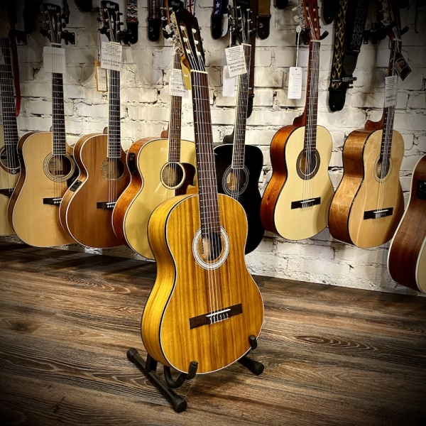
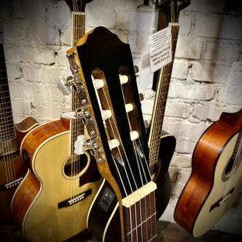
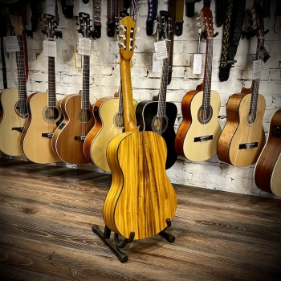

Классическая Гитара
  Классическая гитара, известная своим богатым и теплым звучанием, является символом музыкальной элегантности. С её нежными нейлоновыми струнами и широким грифом, она предлагает комфорт и точность при игре, делая её идеальным выбором как для начинающих, так и для опытных гитаристов. Традиционно изготовленная из качественных пород дерева, таких как кедр или ель для верхней деки и палисандр или махагон для обечайки и задней деки, классическая гитара обладает глубоким резонансом и насыщенной палитрой тонов.
Эстетически, она выделяется своими изящными линиями и часто украшается инкрустацией и ручной росписью, что делает каждый инструмент уникальным произведением искусства. Используемая в различных жанрах, классическая гитара продолжает вдохновлять музыкантов на создание новых произведений, благодаря своей универсальности и выразительности. Она не просто инструмент, а ключ к миру музыкального мастерства и творчества.